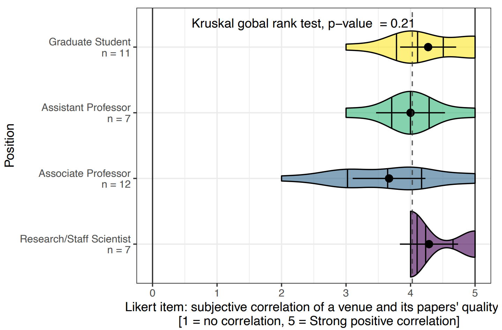

Is IEEE VIS *that* good? On key factors in the initial assessment of manuscript and venue quality


Venue. alt.VIS (2021)
Authors. Nicholas Spyrison, Benjamin Lee, Lonni Besançon
Abstract. Background: Academic performance is at the heart of hiring decisions and funding applications. It is based on a combination of qualitative and quantitative metrics. One of those is the venue in which scholarly publications are published. Depending on the perceived (qualitative) or measured (quantitative) prestige associated with a venue, a specific publication will have more or less weight.
Objectives: We want to understand how visualization researchers consider the prestige of a venue when looking for papers that they could use in their own manuscripts, and how they determine the prestige of any given venue.
Method: We ran an online survey open for 10 days that we sent out to visualization researchers.
Results: We gathered 46 responses from a sample of convenience. We found that publication venue plays the biggest part in how visualization researchers assess research articles. Interestingly, rating systems and metrics are least important criteria for researchers when assessing the quality of a venue.
Conclusion: We highlight the potential risks around focusing on venue when assessing research articles. We further underline the necessity to discuss with the community on strategies to switch the focus to robustness and reliability to foster better practices and less stressful publishing expectations.
Reproducibility: Data, materials and preregistration available on osf.io/ch6p4/